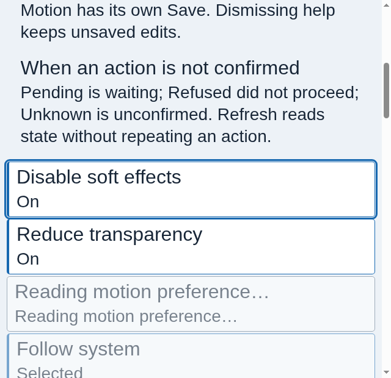
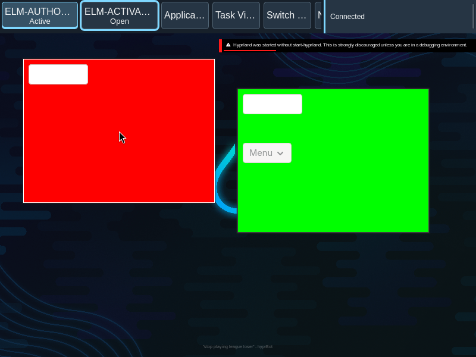

Layered windows
Independent attention cues make complex scenes legible without relying on color alone.
Six meanings
- Active application
- A solid application contour and label identify the observed active application.
- Focused window
- A neutral two-pixel edge, guards, raised titlebar and title beacon identify the focused window.
- Candidate
- Corner brackets and a Candidate label identify the item being traversed, not an activation.
- Control focus
- An offset ring identifies the actual keyboard-focused control.
- Confirmed recipient
- Paired chevrons or an explicit label identify the confirmed keyboard recipient.
- Family
- Short segmented brackets identify an observed relationship, never a guessed relationship from a title or icon.
Combined scene
These static examples show separate observed facts at the same time. The labels and geometry remain meaningful without color.
The labeled ring illustrates control focus; Tab to the button to see actual control focus. The example does not change desktop state. A focused window and keyboard recipient need not be the same surface.
When focus is missing
When focus or keyboard recipient is not confirmed, show no focused edge or recipient mark. A previous active application can remain identified when its observation remains valid.
Opaque guards
An inner and outer one-pixel guard surround the focused two-pixel edge, preserving separation against changing wallpaper. Owned chrome is opaque; client content is not dimmed.
Effects off
The same labels, brackets, borders and focus ring remain when shadows and glow are removed. Family brackets and recipient marks remain sharp.
Observed appearances


